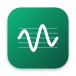

Tonwerk-AI
Songs auf dem eigenen Mac erzeugen und vom iPhone, iPad oder Mac aus steuern. Tonwerk-AI ist eine App für einen Server, den du selbst betreibst: Er rechnet mit den Musikmodellen YuE2 und ACE-Step auf einem Mac mit Apple Silicon, die App zeigt Bibliothek, Warteschlange und Werkzeuge und spielt die Songs ab. Es gibt kein Konto und keinen Dienst von mir dazwischen.
Für macOS 14 und neuer, Apple Silicon und Intel, signiert und von Apple notarisiert; die App meldet neue Versionen selbst. Für iPhone und iPad gibt es Tonwerk-AI im Test über TestFlight, auf Einladung. Die App braucht einen eigenen Server auf einem Mac mit Apple Silicon; ohne ihn zeigt der Demo-Modus eine Beispielbibliothek.
Was Tonwerk-AI erzeugt, ist KI-erzeugt und so gekennzeichnet; was das beim Veröffentlichen heißt, steht unter KI und Verantwortung. Die Plugins für Logic und andere DAWs (Tonwerk ohne „AI“) stehen auf der Startseite.
Dein Mac rechnet
Die Modelle laufen auf deinem Mac mini oder MacBook, eins nach dem anderen, damit der Speicher reicht. Songs, Texte und Aufnahmen bleiben dort.
Die App steuert
iPhone, iPad und Mac verbinden sich über Tailscale mit dem Server, auch unterwegs. Wer nicht in deinem Tailnet ist, erreicht ihn nicht.
Logic im Blick
Jeder Song kommt mit Partitur. Die App macht daraus MIDI und ein Logic-Projekt, spielt Spuren auf MIDI-Geräten oder den Tonwerk-Synths.
Funktionen
Die App hat links (auf dem iPhone im Menü) die Seiten Erstellen, Bibliothek, Zum Anhören, die Warteschlange und die Playlists, darunter die Werkzeuge. Welche Werkzeuge rechnen können, hängt davon ab, was auf dem Server eingerichtet ist (siehe Optionen); fehlt etwas, sagt die Seite, was.
Erstellen
- Stil aus Bausteinen (Genre, Stimme, Instrumente, Stimmung, Tempo, Sprache) oder frei geschrieben; „Bewährt“ bietet die Bausteine deiner bestbewerteten Songs an.
- Songtext mit Abschnitten wie
[Verse],[Chorus]oder[Bridge]. YuE2 singt Texte, schreibt aber keine: Text entwerfen lässt ein Sprachmodell aus Stichwörtern oder einem Foto einen deutschen oder englischen Text schreiben, lokal in LM Studio oder, mit eigenem Schlüssel, mit Claude. Eine kurze Anweisung („Refrain eingängiger“) überarbeitet einen Entwurf. - Partitur im ABC-Format: eigene, übernommene oder transkribierte Melodien, in jede der 24 Tonarten versetzbar, auch von Dur nach Moll.
- Qualität Entwurf oder voll, Länge bis 10 Minuten, 1 bis 10 Songs auf einmal, Seed und die erweiterten Parameter des Modells (Sampling, Schritte, eigene Klang-LoRA).
- Vorlagen speichern Stil und Parameter unter einem Namen; Alles übernehmen bei einem Song trägt alles ein, womit er entstand.
Bibliothek und Player
- Alle Songs mit Suche in Titel, Stil oder Text, Bewertung mit 1 bis 5 Sternen, Sortierung nach Datum, Sternen, Dauer und Tempo. Zum Anhören sammelt Songs, die seit über einer Woche unbewertet sind.
- Tempo, Tonart und wie deutlich der Text gesungen ist, vom Server einmal gehört. Notizen, eigene Titel und eigene Cover je Song (Foto, Datei oder auf dem Mac gemalt, mit FLUX.2 Klein, Z-Image Turbo, Krea 2 Turbo oder FLUX 3 Klein).
- Der Player läuft im Hintergrund, mit Sperrbildschirm, Kontrollzentrum und AirPods. Vollbild mit großem Cover, Analyzer in der Farbe des Covers und dem Songtext, dessen gesungene Zeile mitläuft.
- Playlists, die auf allen Geräten gleich sind, weil sie auf dem Server liegen.
- Teilen / Exportieren als kleine AAC für Messenger, MP3, M4A oder FLAC, mit Titel, Text, Cover und auf −14 LUFS gebracht.
- Musikvideo aus Cover, Analyzer, Partikeln oder Plasmakugel und dem mitlaufenden Text, für YouTube (16:9) oder Shorts und Reels (9:16), auf Wunsch aus eigenen Fotos und Clips auf die Beats geschnitten.
Warteschlange
Was rechnet und was wartet, live: jeder Song mit seinen Schritten (Partitur, Tokens, Synthese, Audio) und ihrer Dauer, dazu Fassungen, Stems, Sprachaufnahmen, Bilder und Videos. Kacheln oben zeigen, welches Modell gerade den Speicher hat. Fertige Songs lassen sich als Playlist übernehmen, das Protokoll des Workers steht darunter.
Werkzeuge
- Logic
- Ein Song oder eine eigene MIDI-Datei oder
score.abcwird zur Vorschau mit Pianorolle, Spuren und Mischpult. Jede Spur spielt auf einem MIDI-Gerät (auch über Bluetooth) oder einem Tonwerk-Synth. Export als MIDI, MusicXML oder Logic-Projekt mit Audio, auf Wunsch mit Gesang aus den Stems, Begleitstimmen und Bass und Schlagzeug aus den Stems. - Instrumente
- Die Klänge der Tonwerk-Synths (Analog und FM) bearbeiten und auf einer Testtastatur spielen; die Bibliothek deiner MIDI-Geräte.
- Stimmen
- Songs in Stems trennen (Gesang trocken und mit Hall, Instrumental, Bass, Schlagzeug), einen Song mit einer Referenzstimme neu singen lassen (Seed-VC), eine eigene Gesangsspur mit einer anderen Stimme singen.
- Transkription
- Eine Aufnahme mit SheetSage2 zur Melodie-Partitur, oder mit Basic Pitch zu MIDI, wie gesungen.
- Sprachlabor
- Text mit lokalen Sprachmodellen sprechen lassen, auch mit einer im Mikrofon aufgenommenen Stimme; Sprachaufnahmen von Rauschen befreien.
- Singen
- Noten und Worte werden mit SoulX-Singer zu einer gesungenen Stimme: Melodie in einem Noteneditor mit einer Silbe je Note zeichnen oder aus einer MIDI-Datei oder einem Song übernehmen, als MIDI speichern. Gesungen wird mit den Beispielstimmen von SoulX-Singer oder einer eigenen, die du im Mikrofon einsingst oder als WAV hochlädst. Die Aussprache ist englisch.
- ACE-Step
- Das zweite Songmodell mit eigenen Parametern, auch für Cover und Neuberechnung einzelner Stellen eines Songs.
- Ausarbeitung
- Eine geschriebene Song-Idee (Aufbau, Akkorde, Text, Melodie) wird mit Claude zu einem Songplan: Partitur und Text für YuE2, Vorgaben für ACE-Step und ein MIDI-Entwurf mit Begleitung.
- Begleitstimmen
- Zu einer Melodie parallele Stimmen, Bordun und Chorsatz als MIDI.
- Auswertung
- Womit die bewerteten Songs gemacht wurden, gegen ihre Sterne: welche Bausteine, Modelle und Einstellungen sich bewähren.
- Protokoll, Speicher, Vorlagen
- Das Protokoll des Servers mit einem Bericht zum Kopieren, wohin der Speicherplatz geht samt Aufräumen, und die gespeicherten Vorlagen.
Modelle und Lizenzen
Tonwerk-AI bringt keine Modelle mit; der Server lädt sie bei der Einrichtung aus ihren Quellen, und es gelten deren Lizenzen. Die Gewichte von YuE2 stehen unter CC BY-NC 4.0, Einzelpersonen dürfen damit erzeugte Songs aber ausdrücklich verkaufen und vermarkten. Andere Modelle erlauben nur nicht kommerzielle Nutzung oder verlangen eine Nennung. Welches Modell was erlaubt, steht in der Übersicht unter KI und Verantwortung.
Hilfe und Kontakt
Fragen, Fehler oder Wünsche zu Tonwerk-AI an marcel@tonwerk.studio oder als Issue auf GitHub. Bei einem Fehler hilft der Bericht aus Werkzeuge → Protokoll: Er nennt Version, Zustand des Servers und die letzten Warnungen, aber keine Einstellungen, Schlüssel oder Adressen.
Häufige Fragen stehen in der Einrichtung unter Probleme.